二、模組查找規則-當模組沒有路徑且沒有後綴時
1. Node.js會假設它是系統模組
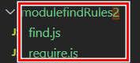
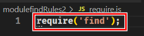
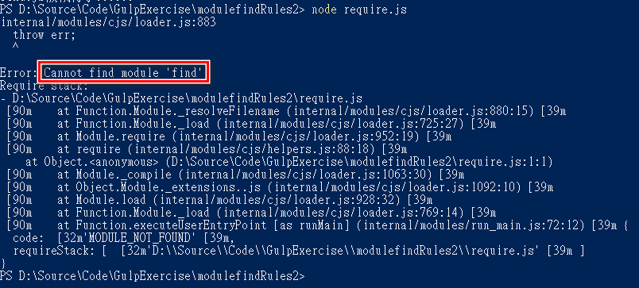
試不出來 ...>_<
2. Node.js會去node_modules資料夾中
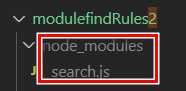
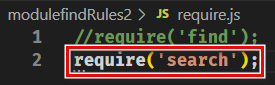
4. 再看是否有該名字的資料夾
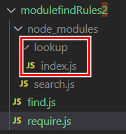
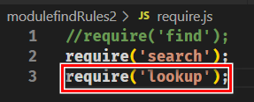
5. 如果是資料夾看裡面是否有index.js
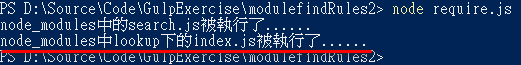
6. 如果沒有index.js查看該資料夾中的package.json中的main選項確定模組入口檔
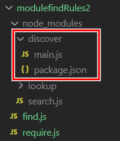
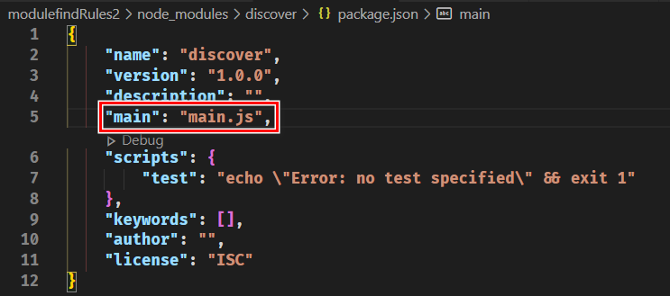
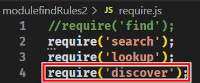
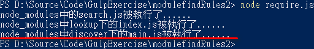
7. 否則找不到報錯
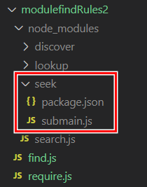
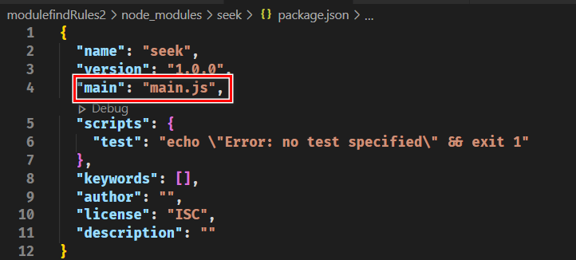
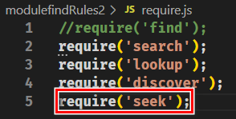
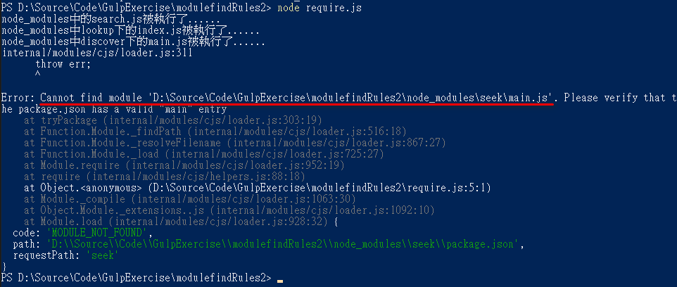